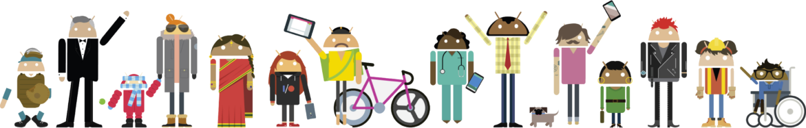

GDG Juiz de Fora
Bem-vindo(a) a comunidade de desenvolvedores.
Participe, aprenda e compartilhe conhecimento!
Como Participar?
Participar do Google Developers Group Juiz de Fora é muito fácil!Se inscreva no GDG Community, clicando em "join", para você ser informado de todos os próximos eventos.
Além de ir aos grupos de estudos e demais eventos, você também pode participar apresentando conteúdos, se tornando um embaixador em sua instituição e até como organizador, basta conversar com os responsáveis em qualquer evento, demonstrar seu interesse e começar efetivamente a apoiar as ações do grupo.

Quem somos?
O Google Developers Group Juiz de Fora é para todos aqueles interessados em programação e tecnologias para desenvolvedores. Desde de plataformas e tecnologias ligadas ao Google (como Angular, Firebase, Google Cloud, Google Chrome), quanto de outros provedores (como React, .NET Core, VUE, Next.JS) são abordados em nossos eventos.
Podemos ter várias formas, apenas um encontro pequeno para assistir um vídeo mais recente para desenvolvedores Google ou grandes encontros com demonstrações e palestras sobre tecnologia, eventos como code sprints e hackathons. No entanto, fundamentalmente, os GDGs se destinam a conteúdo técnico e desenvolvedores e o público-alvo principal são os desenvolvedores.

Um GDG é
- Gerenciado por indivíduos entusiastas da comunidade de desenvolvedores
- Um lugar para conhecer as ferramentas e tecnologias do Google para desenvolvedores
- Um lugar para ver o que as empresas e os desenvolvedores locais estão fazendo com essas tecnologias
- Voltado para desenvolvedores e conteúdo técnico educacional
- Aberto ao público com uma associação pública
- Um lugar para conhecer pessoas inteligentes e legais na indústria da tecnologia :)
Um GDG não é
- Gerenciado por uma corporação
- Um lugar para ouvir um argumento de venda clichê a qualquer momento
- Voltado para usuários finais ou conteúdo para consumidores
- Um grupo fechado
Participar ativamente
Além de ir aos grupos de estudos e demais eventos, você também pode participar apresentando conteúdos, se tornando um embaixador em sua instituição e até como organizador, basta conversar com os responsáveis em qualquer evento, demonstrar seu interesse e começar efetivamente a apoiar as ações do grupo.
O primeiro passo é participar de nossos eventos.